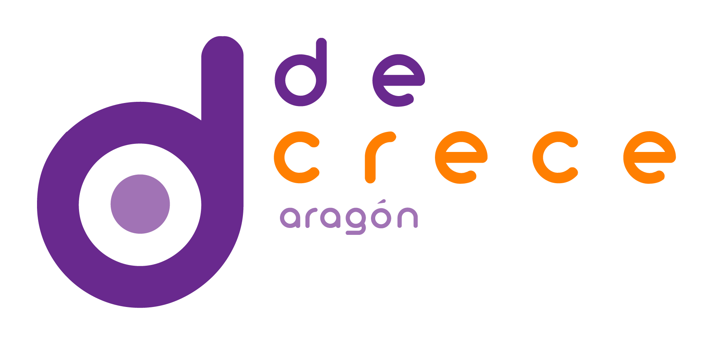

¡Decrece, co!
Sobre ¡Decrece, co!
Futuros habitables: propuestas desde el decrecimiento

¡Inscripciones abiertas! ¡Te esperamos!
13 – 15 de marzo de 2026
Centro de Historias de Zaragoza
Un encuentro abierto para imaginar y construir otras formas de vivir
Vivimos en una paradoja: explotamos el planeta más allá de sus límites y, aun así, no garantizamos una vida digna para todas las personas.
Frente al mito del “más es mejor”, el decrecimiento nos invita a repensar qué significa una buena vida y a construirla desde la cooperación, el cuidado y la suficiencia.
Es hora de encontrar la puerta de salida del paradigma del crecimiento por el crecimiento.
En “Decrece, co! Futuros habitables” compartiremos experiencias, saberes y prácticas que ya están transformando la forma de habitar el mundo.
¿Qué encontrarás?
Tres días para inspirarte, aprender y enredarte
Ponencias inspiradoras
Con referentes como Jorge Riechmann, Alicia Valero o Fernando Valladares.
Talleres participativos
Sobre comunicación, educación, reparación, alimentación e imaginarios de futuro.
Muestra de iniciativas
Que ya están construyendo alternativas en el territorio.
Arte y expresión
Como herramientas para pensar y sentir otros mundos posibles.
Momentos de encuentro y red
Porque los cambios nacen en comunidad.
Crecimiento en el Buen Vivir
Porque decrecer en consumo es la oportunidad de crecer en otros aspectos de la vida mucho más auténticos.
Programa
Horarios y actividades de ¡Decrece, co!
Cada día está organizado en ponencias y talleres, espacios para el intercambio y la reflexión colectiva.
VIERNES 13 de Marzo
17h - 18h45 CHARLAS
Apertura
Charla inaugural: con Marina Gros, Lucía López-Marco y Carmen Marcuello [Más info]
19h - 20h45 TALLERES
Talleres simultáneos:
SALA 1
- Manual de lo posible. Metodología para idear presentes alternativos [Más info]
SALA 2
El impacto invisible de la vida digital. [Más info]
Vida sencilla y prácticas cotidianas para reducir el impacto. [Más info]
SALA 3
- Comunidades energéticas: Experiencias en Aragón. [Más info]
SALÓN DE ACTOS
- Taller Teatro social performativo. [Más info]
SÁBADO 14 de Marzo
10h - 11h45 CHARLAS
“Decrecer para sobrevivir y para vivir: ética, comunidad y futuro” con Jorge Riechmann y Carmen Madorrán [Más info]
12h - 13h45 CHARLAS
“Materias primas y energía – centros de datos y metales críticos” con Alicia Valero [Más info]
“Decrecimiento y energía: implicaciones para el sector agroalimentario” con Enrique Muñoz [Más info]
14h - 17h DESCANSO
Espacio expositivo [Más info]
Comida: Organizada por el CSA La Revuelta. Recuerda reservar tu plaza. [Más info]
17h - 18h45 TALLERES
Talleres simultáneos:
SALA 1
- Nueva cultura de la tierra. [Más info]
SALA 2
- Repair Café by Herco. ¿Tienes algo que quieras arreglar por casa?, ¡tráelo y lo arreglamos juntxs! [Más info]
SALA 3
Permacultura, decrecimiento y soberanía alimentaria para la vida periurbana. 10 años de experiencia en una finca familiar, con aciertos, errores y claves prácticas para empezar [Más info]
Cultivo de setas y su papel en los ecositemas. [Más info]
SALÓN DE ACTOS
Mesa redonda: “Experiencias comunitarias de okupación rural”. [Más info]
Cómo los espacios comunitarios y autogestionados ayudan al decrecimiento. Experiencias desde el CSA A Melonera de Sabiñánigo
EXTERIOR
- Contrapedal: La bici como herramienta de cambio Ruta temática ciclista por Zaragoza. ¡Trae tu bici! [Más info]
19h - 20h45 CHARLAS
“Cómo decrecer en la práctica” digitalización y su problemática con Adrián Almazán y Luis González [Más info]
DOMINGO 15 de Marzo
10h - 11h45 TALLERES
Talleres simultáneos:
SALA 1
- Laboratorio de Ecotopías: construyendo horizontes ecosociales a través del arte. Proyecto LURE [Más info]
SALA 2
- Tejiendo sostenibilidad. ¡Trae alguna prenda de ropa para arreglar o tunear! Asociación “Jesús, qué barrio” [Más info]
SALA 3
- Transición a la alimentación. Tiendas cooperativas, grupos de consumo y tiendas ecológicas [Más info]
SALÓN DE ACTOS
- Teatro participativo: “Decrecimiento administrativo en los micropueblos.” [Más info]
12h - 13h45 CHARLAS
“Decrecimiento o convertir lo inevitable en inspirador” con Agnes Delage y Fernando Valladares [Más info]
Cierre y Concierto: Cambiemos las reglas Interpretación de Cantatutti , coro inclusivo de la Universidad de Zaragoza [Más info]
¿Por qué venir?
Un fin de semana para experimentar otras formas de vida, compartir, reír y aprender
Si te interesa explorar cómo vivir mejor con menos, lograr una vida sin prisas y rica en relaciones, este encuentro es para ti.
Queremos que salgas con nuevas ideas, conexiones y energía para actuar desde tu ámbito personal, educativo, profesional o comunitario.
Detalles prácticos
Cuándo y dónde
13 – 15 de marzo de 2026
Centro de Historias de Zaragoza
Aforo limitado: 182 personas
El evento es gratuito, pero requiere inscripción previa (plazas limitadas).
Selecciona los talleres en los que quieres participar y reserva la comida del sábado si quisieras comer con nosotras en La Revuelta (precio: 5€).
El centro de historias se encuentra aquí:
Detalles sobre la comida
Se trata de un menú vegano de dos platos y postre elaborado por el CSA La Revuelta. Su precio es 5€ a pagar en metálico e in situ (los beneficios irán a la edición del libro Acratador)
¡Recuerda reservar tu plaza en la inscripción! Encontrarás la información en el mismo enlace de inscripción al evento y talleres. La comida será aquí:
Alojamiento
Como es posible que muchas personas vengan de fuera de Zaragoza, en la inscripción estamos organizando un sistema de alojamiento en casas particulares aunque no podemos garantizar que encontremos dónde albergar a todo el mundo que lo necesite. Si puedes ofrecer o necesitas alojamiento, déjalo marcado en la inscripción.
Participa
Porque crecer sin límites en un planeta finito no tiene sentido.
Súmate a este encuentro colectivo para imaginar, debatir y construir una vida buena dentro de los límites del planeta.
¡Te esperamos en Zaragoza!
La inscripción al evento es gratuita pero las plazas son limitadas dado que el aforo máximo del espacio plenario es de 182 personas. Las plazas para los espacios plenarios y los talleres se asignarán por orden de registro.
Por favor, si quieres cambiar tu inscripción (talleres / charlas a las que asistes), o no puedes acudir por cualquier motivo, háznoslo saber cuanto antes en el correo-e aragondecrece[at]proton.me para que otra persona pueda asistir en tu lugar.